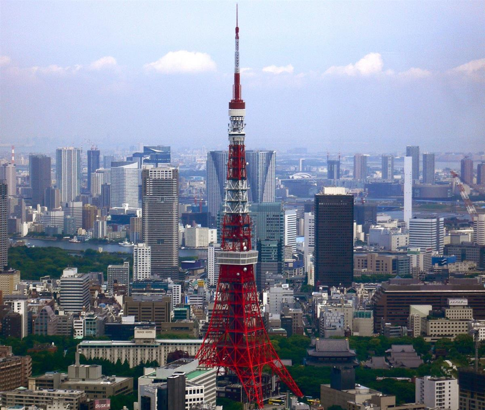
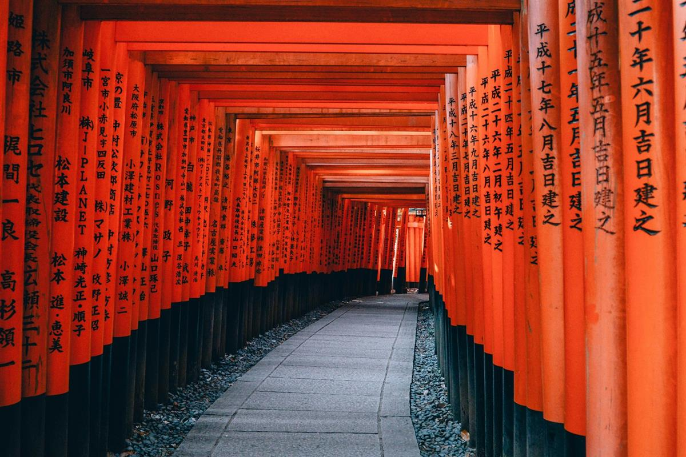
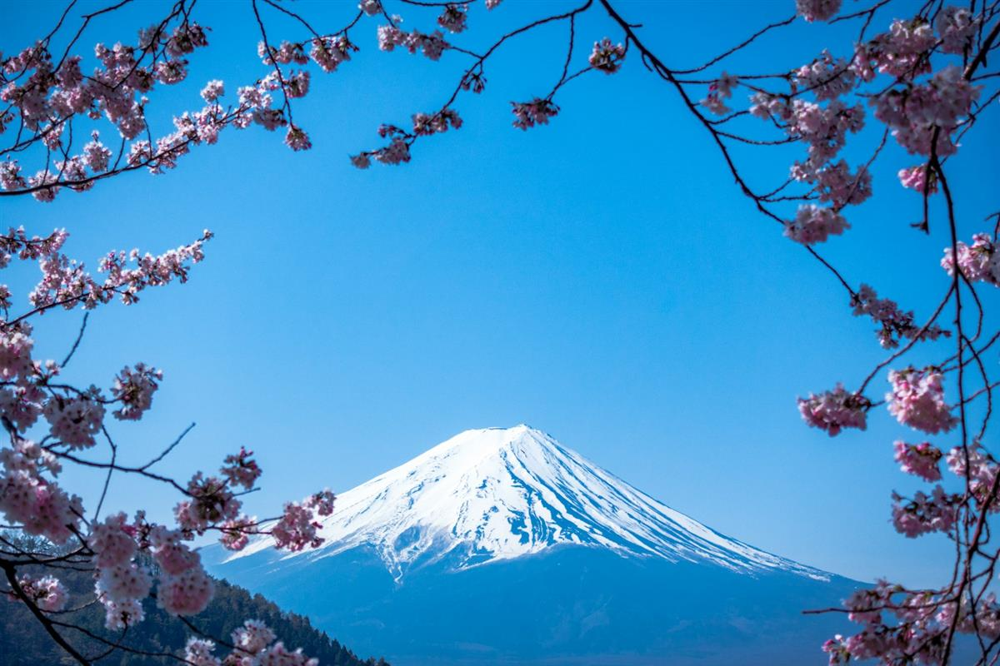
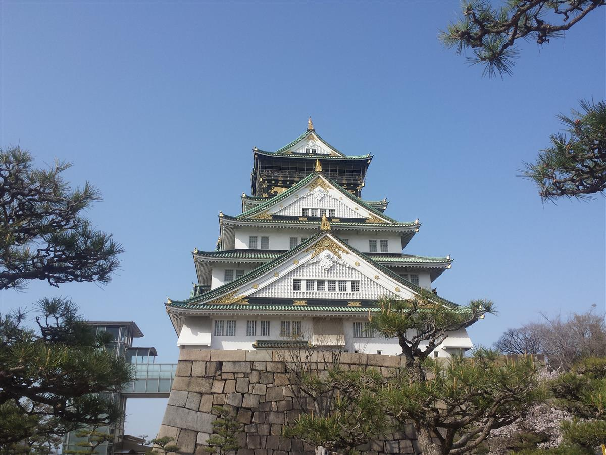
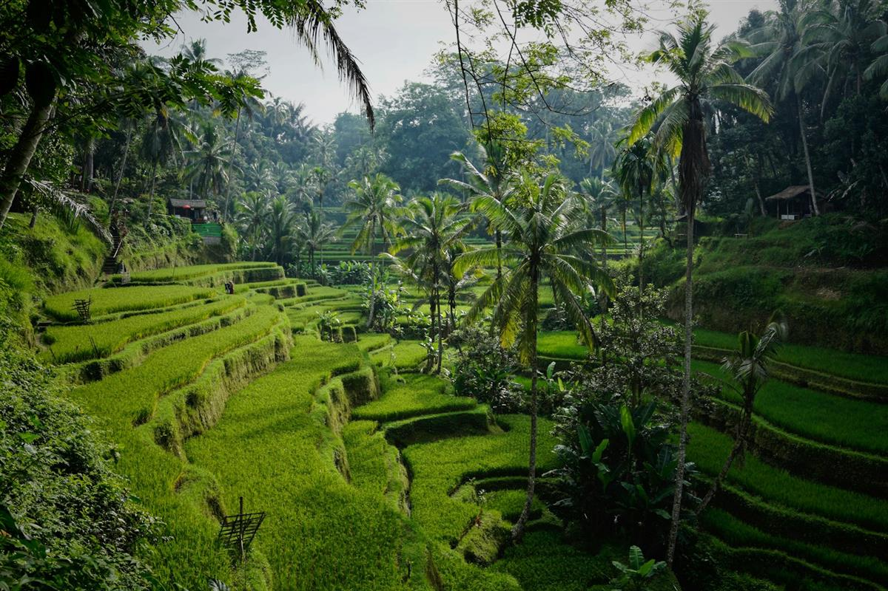
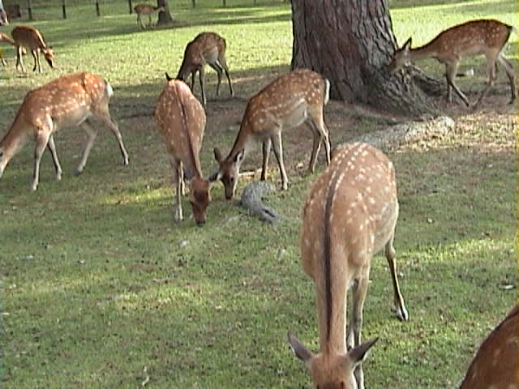
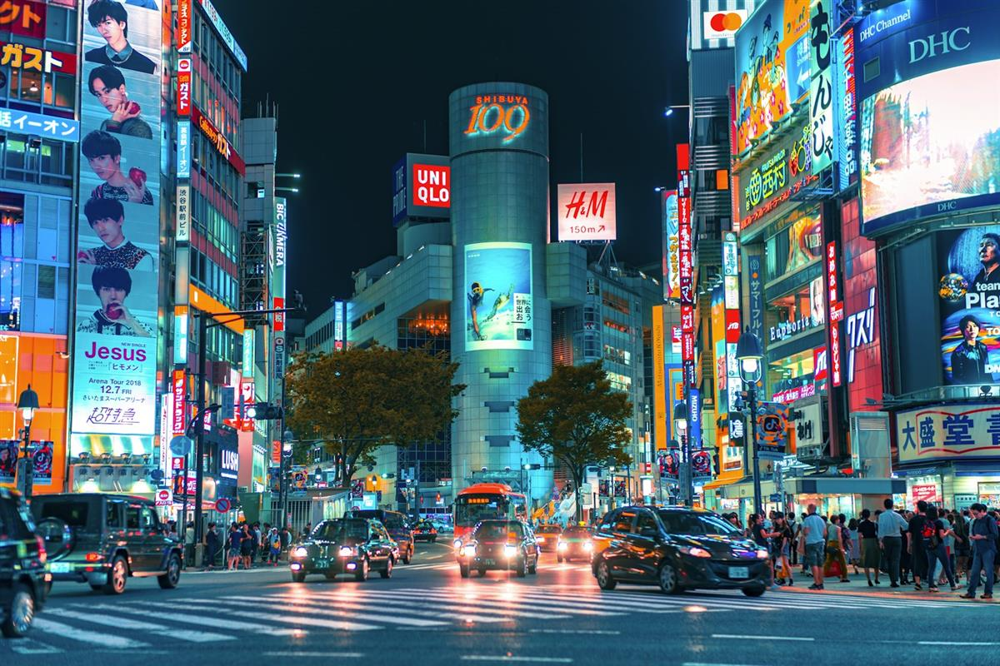
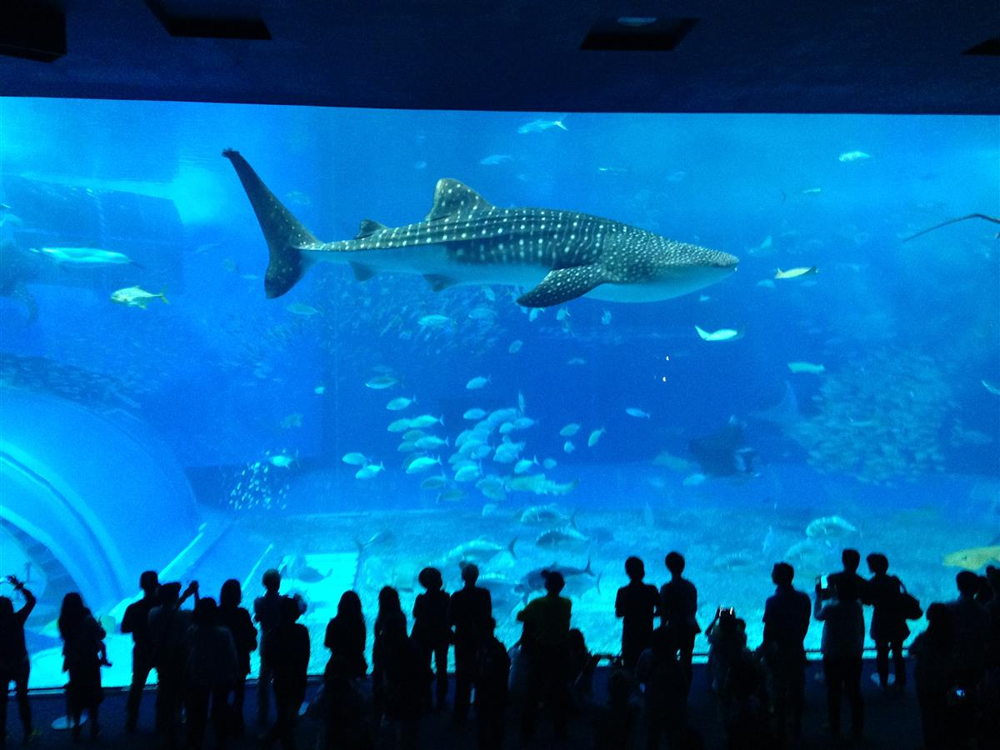

Japan is a land of profound contrasts, where ancient traditions and cutting-edge technology exist in a delicate, beautiful balance. It is a place where you can find neon-lit skyscrapers across the street from centuries-old wooden temples, and where the silence of a Zen garden is just a short train ride away from the world's busiest intersections. This guide takes you on an immersive journey through 8 essential Japanese destinations—from the volcanic peaks of Mount Fuji to the tropical reefs of Okinawa—each offering a unique slice of the nation's rich and enduring spirit. We invite you to discover the "Land of the Rising Sun" through an authentic and luxury-focused lens.

Rising like a crimson needle into the Tokyo sky, the Tokyo Tower is more than just a communications hub; it is a symbol of Japan's post-war resilience and rapid modernization. Inspired by the Eiffel Tower but standing slightly taller at 333 meters, this lattice structure in the Minato district has been a constant landmark since 1958. Its striking International Orange and white paint scheme ensures it remains visible against both the clear blue skies and the heavy morning fog of the metropolis.

Located in southern Kyoto, Fushimi Inari Taisha is perhaps the most iconic Shinto shrine in all of Japan. It is dedicated to Inari, the Shinto god of rice and prosperity, and serves as the head shrine for thousands of smaller shrines across the country. What makes Fushimi Inari truly unique is the atmospheric tunnel of over 10,000 "Senbon Torii" (thousand torii gates) that winds its way up the sacred Mount Inari. Each gate is a donation from an individual or a company, with the names of the donors inscribed on the back in elegant black calligraphy.

Standing at 3,776 meters, Mount Fuji is Japan's highest peak and an active volcano that has long been revered as a sacred mountain of unparalleled beauty. Its nearly perfect symmetrical cone is a global symbol of Japan, appearing in countless works of art, most famously Hokusai’s "Thirty-Six Views of Mount Fuji." For many Japanese, climbing the mountain is a once-in-a-lifetime pilgrimage to see the "Goraiko" (sunrise) from the summit, a moment of profound national and personal significance.

Osaka Castle is a stunning testament to the power and ambition of Toyotomi Hideyoshi, the great unifier of Japan who originally built the fortress in 1583. While the current structure is a 20th-century reconstruction, it faithfully recreates the grandeur of the original, with its white-and-gold appearance and massive stone walls that were once considered impenetrable. The castle is surrounded by a vast park and a double moat, creating a peaceful green oasis in the heart of the energetic metropolis of Osaka.

The Hiroshima Peace Memorial Park is a place of profound reflection and a global symbol of the desire for world peace. Located at the center of Hiroshima city, the park was established on the site of what was once the city's commercial and political heart before the first atomic bombing on August 6, 1945. The park's purpose is not only to remember the victims but to promote a future without nuclear weapons.

Nara was Japan's first permanent capital in the 8th century, and today, Nara Park is one of the country's most unique and charming destinations. The park is home to over 1,200 free-roaming Sika deer, which in the Shinto religion are considered the sacred messengers of the gods. These deer are remarkably tame and have learned to bow to visitors in exchange for "shika senbei" (deer crackers), creating a whimsical and interactive experience that is loved by tourists and locals alike.

Sapporo, the capital of Hokkaido, Japan's northernmost island, is a city built on the themes of openness, nature, and adventure. Unlike many older Japanese cities, Sapporo was planned on a grid system with a large park (Odori Park) running through its center, giving it a spacious and modern feel. It gained global fame as the host of the 1972 Winter Olympics and remains the heart of Japan's thriving winter sports scene.

Located on the tropical Motobu Peninsula in Okinawa, the Churaumi Aquarium is widely considered one of the finest aquariums in the world. Its name, "Churaumi," translates to "beautiful sea" in the local Okinawan dialect, which perfectly describes the vibrant marine life of the Ryukyu Islands. The aquarium is designed to take visitors on a journey from the sun-drenched coral reefs of the surface down into the mysterious and crushing depths of the Kuroshio Current.
The Endless Spirit of Japan: Japan is a destination that stays with you long after you leave. From the neon pulse of Tokyo to the quiet forests of Nara, from the snow-capped peak of Fuji to the azure depths of Okinawa, the country offers a richness of experience that defies easy description. We hope this guide inspires you to embark on your own luxury adventure through this incredible nation. Arigato and safe travels!
Every destination and accommodation is hand-selected to meet the highest standards of luxury.
Book directly with verified premium providers to ensure the best rates and exclusive perks.
Our worldwide presence ensures you have premium support wherever your journey takes you.
"Luxe Voyages didn't just book a trip; they crafted an unforgettable experience. Every detail was handled with unparalleled professionalism."